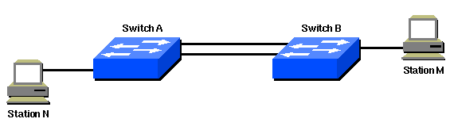
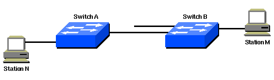

Motivation
The Spanning Tree Protocol (STP) is a layer 2 protocol that runs on bridges and switches. The main purpose of STP is to ensure that you can build a loop-free networks when you have redundant links. Redundant links are important to provide fault tolerance if an active link fails. However, if redundant links are used to connect switches, it creates a switching loop resulting in broadcast storm and MAC table instability.
Introduction
As the name suggests, STP creates a spanning tree within a network connected by layer-2 bridges, those links that are part of spanning tree are set up as preferred links. These preferred links is used for transmission unless it fails. STP also forces redundant links into a standby state. The configuration leaves a single active path between any two network nodes. If a link in the forwarding state becomes unavailable, STP reconfigures the network and reroutes data through the activation of the appropriate standby redundant link.
In following network, a redundant link is created between Switch A and Switch B. However, this setup creates the possibility of a bridging loop. For example, a broadcast or multicast packet that transmits from Station M and is destined for Station N simply continues to circulate between both switches.

However, when STP runs on both switches, the network logically looks like this:

Implementation
STP designates one layer-2 switch as root bridge that becomes the focal point in the network. All other decisions in the network, such as which port to block and which port to put in forwarding mode, are made from the perspective of this root bridge.
Before you configure STP, you select a switch to be the root bridge. This switch does not need to be the most powerful switch, but choose the most centralized switch on the network. The backbone switches is often chosen because these switches typically do not connect to end stations, also, moves and changes within the network are less likely to affect these switches.
Once root bridge is selected, the switches comply to these rules:
- All ports of the root switch must be in forwarding mode.
- Each switch determines the best path to get to the root. The switches determine this path by a comparison of the information in all the BPDUs that the switches receive on all ports. The port that receives least number of information in the BPDUs is the root port and set to forwarding to mode.
- All the other ports of all the switches must be placed in blocking mode. The rule only applies to ports that connect to other bridges or switches. STP does not affect ports that connect to workstations or PCs. These ports remain forwarded.
- STP calculates the path cos based on the bandwidth of the links between switches. The port with lowest path cost to the root bridge becomes the root port.